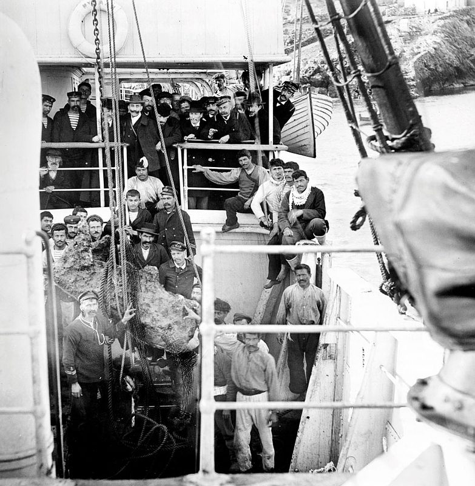
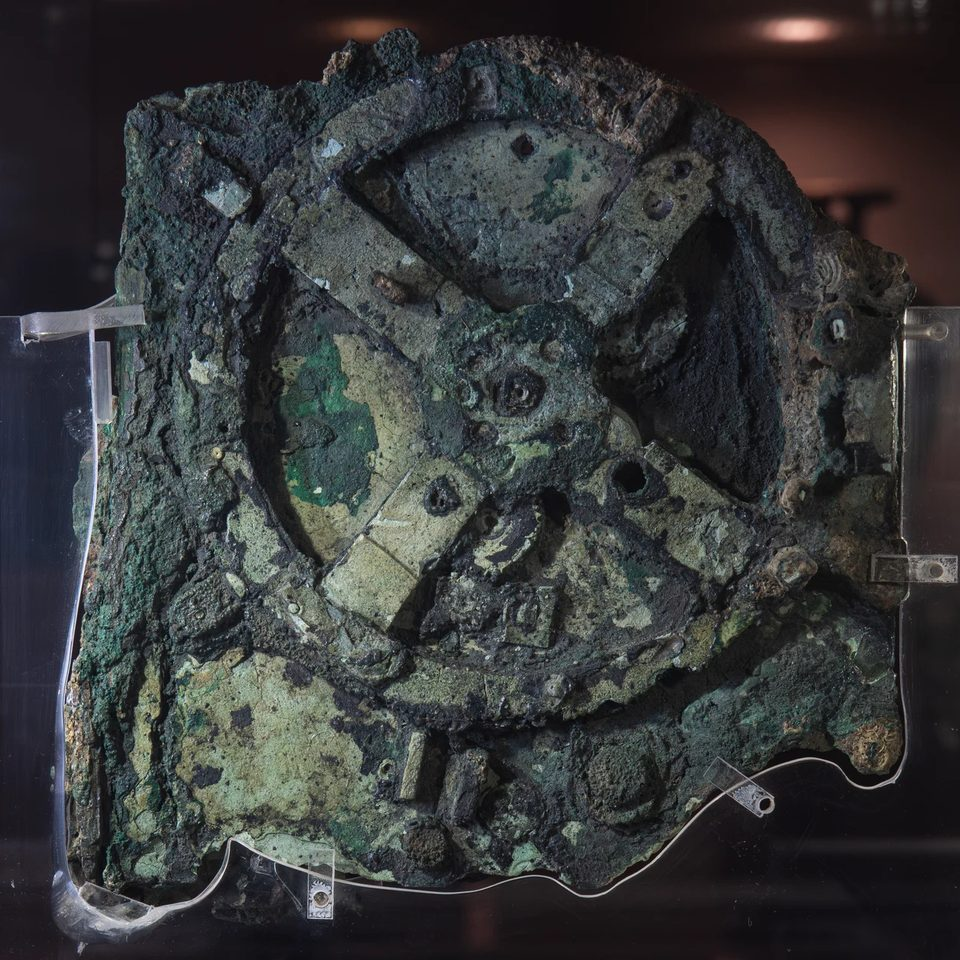
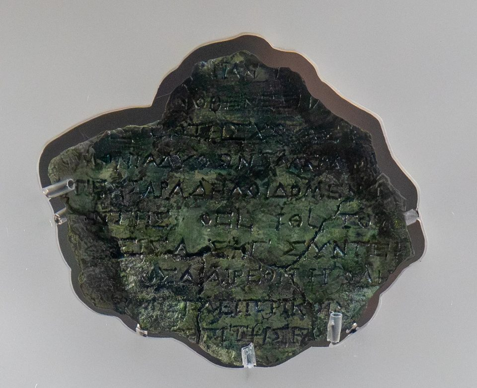
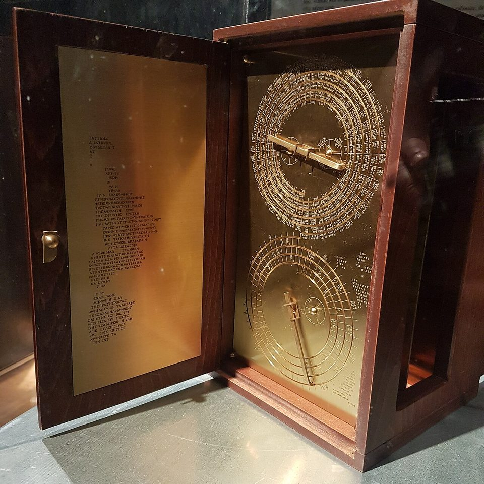
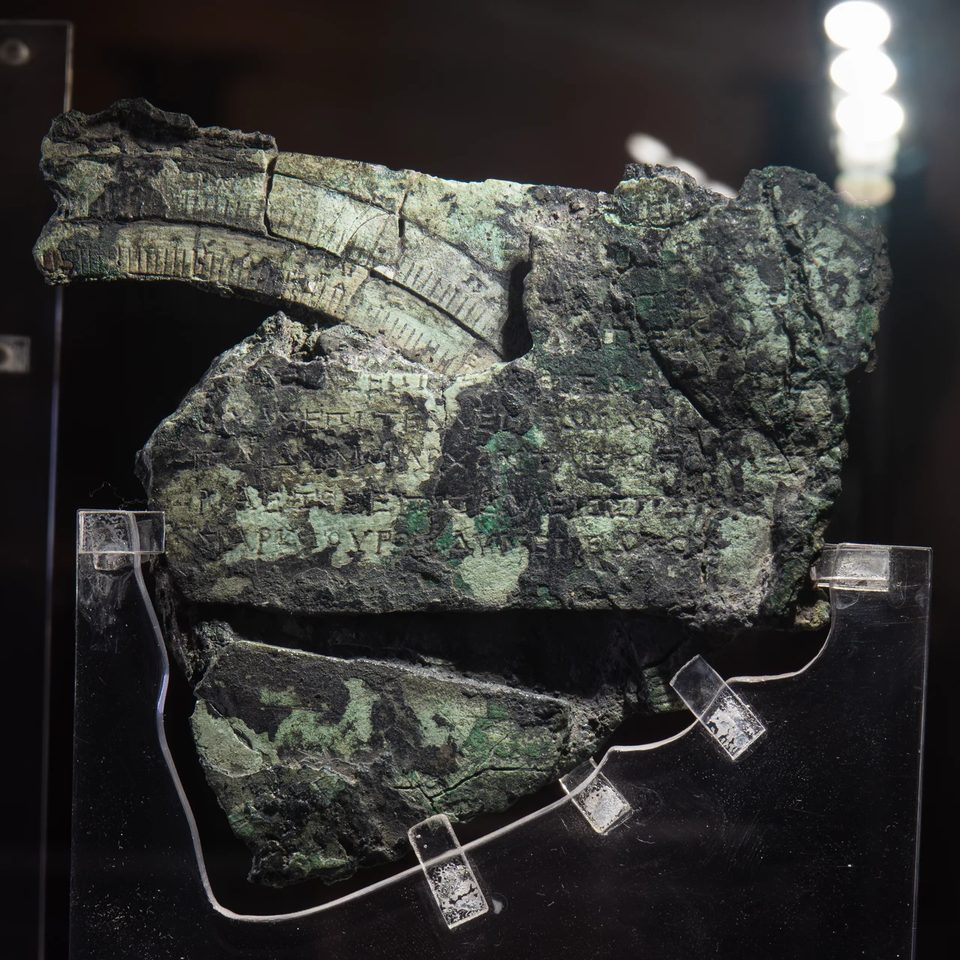

O mecanismo de Anticítera — engrenagens no fundo do mar
Saiu de um naufrágio como um torrão verde de bronze e madeira, e ficou meses numa caixa enquanto o museu cuidava das estátuas. Lá dentro havia dentes de engrenagem com pouco mais de um milímetro e meio. Foi preciso um século de radiografia e tomografia para entender o que eles faziam — e ainda não se sabe tudo.
- Onde
- Naufrágio de Anticítera, Grécia
- Recuperado
- 1901
- Naufrágio
- ≈ 70 – 60 a.C.
- Datas propostas
- divergem: ≈ 205 a 87 a.C.
- Fragmentos
- 82
- Engrenagens que sobreviveram
- 30
Anticítera é uma ilha pequena e alta entre Citera e Creta, no ponto em que o Egeu encontra o mar aberto. Na primavera de 1900, um barco de mergulhadores de esponja da ilha de Simi, comandado por Dimitrios Kontos, parou ali para esperar o tempo melhorar. Um dos homens desceu, e voltou à superfície contando que tinha visto corpos no fundo. Eram estátuas — de bronze e de mármore, espalhadas entre ânforas sobre o declive, a uns quarenta e cinco a cinquenta e cinco metros de profundidade, conforme a medição que se usa.
O governo grego entrou na operação com navios da Marinha, e entre o fim de 1900 e o outono de 1901 os mesmos mergulhadores, com escafandro de capacete e sem nenhuma tabela de descompressão, tiraram do mar a carga de um navio afundado no século I antes de Cristo. É considerada a primeira grande escavação subaquática patrocinada por um Estado. O custo apareceu no corpo de quem trabalhou: um mergulhador morreu e dois ficaram paralisados pela doença da descompressão.
Junto com as estátuas veio um bloco que ninguém achou que valesse a pena olhar duas vezes. Ele foi levado para o Museu Arqueológico Nacional, em Atenas, e esperou.

01O bloco que tinha uma roda
O bronze, depois de dois mil anos no mar, tinha virado outra coisa: sais de cobre que racharam e encolheram quando secaram. O bloco se partiu. Em 17 de maio de 1902, o arqueólogo Valerios Stais, examinando os pedaços, viu numa das faces uma roda dentada. A ideia de que fosse um instrumento astronômico apareceu logo — e foi recebida com desconfiança, porque nada daquele período tinha engrenagens tão finas. Uma corrente chegou a sugerir que o objeto fosse muito mais recente e tivesse caído sobre o naufrágio por acaso. O resto da carga, contudo, era coerente, e o mecanismo estava no meio dela.
O filólogo alemão Albert Rehm foi o primeiro a defender, nas primeiras décadas do século XX, que aquilo era um calculador astronômico. Mas quem tirou o objeto da gaveta de vez foi o historiador da ciência Derek J. de Solla Price, que começou a estudá-lo nos anos 1950. Em 1959 publicou um artigo de divulgação chamado, sem rodeios, de "um computador grego antigo". Em 1971, com o físico nuclear grego Charalampos Karakalos, fez radiografias de raios gama e raios X dos fragmentos — pela primeira vez se via o que estava dentro da crosta. O resultado saiu em 1974 numa monografia chamada Gears from the Greeks, com uma contagem de dentes e um primeiro esquema do trem de engrenagens.
Price acertou a natureza do objeto e errou parte do mecanismo — o que é normal para quem trabalhava com imagens chapadas, em que várias camadas de bronze se sobrepõem numa só sombra. Nas décadas seguintes, Michael Wright, curador do Museu de Ciência de Londres, refez o estudo com tomografia linear e construiu modelos que funcionavam. A peça estava mudando de categoria: de curiosidade para documento.

02O que a tomografia leu
Em 2005, um consórcio chamado Antikythera Mechanism Research Project — com a Universidade de Cardiff, as universidades de Atenas e de Tessalônica e o próprio museu — levou a Atenas um tomógrafo de raios X de alta resolução, de várias toneladas — o aparelho foi até a peça, porque ela não pode sair do museu. Em paralelo, uma técnica de iluminação variável fotografou as superfícies de modo a realçar letras gravadas quase invisíveis a olho nu.
A tomografia separou as camadas que a radiografia de Price empilhava, e fez duas coisas. Contou dentes com uma precisão que não existia antes, permitindo reconstruir o trem de engrenagens da parte de trás. E revelou texto: o mecanismo estava coberto de inscrições, em grego, nas placas e nas portas da caixa, a maior parte escondida sob a crosta. Leram-se milhares de caracteres, em fragmentos de frases, que funcionam como um manual de uso e uma legenda dos mostradores.
Foi assim que os trabalhos publicados na Nature em 2006 e 2008 descreveram duas das soluções mais engenhosas do aparelho. A primeira: um par de engrenagens sobrepostas, ligadas por um pino que corre numa ranhura, fazia o ponteiro da Lua acelerar e desacelerar ao longo do mês — a forma mecânica de representar a velocidade variável da Lua no céu, a mesma que a teoria lunar de Hiparco descrevia no século II antes de Cristo. A segunda: os nomes dos meses no mostrador de trás eram de um calendário de tipo coríntio, e um mostrador menor contava os anos dos grandes jogos gregos.

Em 2016, a equipe publicou, num número inteiro da revista Almagest, a edição completa das inscrições conhecidas. Entre elas está um trecho da tampa da frente que lista períodos dos planetas — com os números 462 e 442, ligados a ciclos de Vênus e de Saturno. É a prova textual de que a frente mostrava, de alguma forma, os cinco planetas visíveis a olho nu. As engrenagens que fariam isso não sobreviveram.
03O que ele calculava: o lido e o reconstruído
Esta é a distinção que mais se perde quando o mecanismo vira manchete. Há funções que estão nas peças — gravadas em texto, ou demonstradas por engrenagens que existem. E há funções que estão nas reconstruções, por boas razões, mas sem a peça para conferir.
Lido nas peças
- Ciclo metônico. O grande mostrador superior de trás é uma espiral de cinco voltas dividida em 235 meses lunares — o intervalo que quase coincide com 19 anos solares, base para casar calendário lunar e solar. Os nomes dos meses estão gravados nas células.
- Saros e previsão de eclipses. O mostrador inferior é uma espiral de 223 meses, o ciclo de repetição dos eclipses. Em 51 das células há sinais que indicam eclipse do Sol ou da Lua, com hora.
- Exeligmos e ciclo de Calipo. Mostradores menores corrigem o terço de dia que sobra no saros e contam o ciclo de 76 anos.
- Os jogos. Um mostrador de quatro setores traz os nomes de Ístmia, Olímpia, Nemeia e Pítia, mais dois festivais menores — os de Dodona e os Haleia de Rodes. É o único ponteiro que gira no sentido contrário.
- Sol e Lua no zodíaco, e a fase da Lua. Na frente, os signos e um anel de dias. A Lua tinha sua velocidade variável pelo pino na ranhura, e uma esfera meio clara e meio escura mostrava a fase.
Reconstruído, com base forte mas sem a engrenagem
- Os cinco planetas. As inscrições dizem que estavam lá; o mecanismo que os movia se perdeu. Existem vários esquemas propostos, todos coerentes com o texto, nenhum confirmável pela peça.
- O "Sol verdadeiro". Um ponteiro que mostrasse a velocidade variável do Sol, como o da Lua. É plausível pela lógica do projeto; não há prova material.
- A engrenagem dracônica. O ciclo que define se uma Lua nova vira eclipse. O grupo de Voulgaris, Mouratidis e Vossinakis propõe uma engrenagem para ele; é proposta.

Em março de 2021, a equipe de Tony Freeth, no University College London, publicou na Scientific Reports a reconstrução mais completa da face da frente: um cosmos de anéis concêntricos com os planetas, o Sol, a Lua e os nós lunares, cada um num anel, movidos por trens de engrenagem compactos e coerentes com os números da inscrição e com as peças que sobraram no fragmento D. A própria equipe abre o artigo lembrando que só um terço do original sobreviveu. É o melhor modelo disponível, e é um modelo — os autores mesmos dizem que o próximo passo é construí-lo para ver se funciona.
04A data que ninguém fecha
O naufrágio é o ponto firme. As ânforas, a cerâmica e as moedas recolhidas no sítio — inclusive as que a equipe de Jacques Cousteau encontrou nos anos 1970 — situam o afundamento por volta de 70 a 60 antes de Cristo. O mecanismo é necessariamente anterior. Quanto anterior, é onde as fontes divergem, e este dossiê registra as versões sem escolher:
- Cerca de 150 a 100 a.C. — estimativa dos primeiros trabalhos da tomografia, pela forma das letras das inscrições.
- Cerca de 205 a.C. — proposta de Christián Carman e James Evans, em 2014, a partir dos eclipses do mostrador do saros: o padrão casa com um ciclo que começa logo depois da Lua nova de 28 de abril de 205 a.C. Freeth chegou a uma data inicial próxima.
- Uma geração antes do naufrágio — Paul Iversen, em 2017, pela análise do calendário e dos jogos, defende que este exemplar foi feito pouco antes do século I a.C., talvez para um cliente do Epiro.
- Cerca de 87 a.C. — datação mais tardia que aparece na literatura de divulgação.
- 23 de dezembro de 178 a.C. — proposta do grupo de Voulgaris, em 2022, para a data de calibração inicial; outros autores preferem 204 a.C.
Há uma armadilha nessa lista. Data de partida do ciclo não é data de fabricação. Um mostrador de eclipses pode ter sido calculado a partir de uma época antiga e gravado décadas depois, assim como um almanaque pode começar a contagem num ano que já passou. Parte da divergência é sobre fatos; parte é sobre o que cada data está medindo.
E há um dado novo que convém não ler errado. Na campanha de 2025, a madeira do casco recuperada no sítio teve datação preliminar por volta de 235 a.C. Isso fala da árvore, não do naufrágio: navios eram construídos e consertados com madeira cortada antes, e usados por décadas.

05O anel de 354 dias
Por um século, o anel externo da frente foi lido como um calendário solar egípcio de 365 dias, porque tem nomes de meses egípcios transcritos em grego. Debaixo dele, num canal, há uma fileira de pequenos furos onde o anel se encaixava. Só um trecho sobreviveu, e a pergunta era quantos furos havia no círculo inteiro.
Em 2020, Chris Budiselic e colegas mediram a posição dos furos nas imagens de tomografia e concluíram que o número mais provável era 354 — a duração de um ano lunar, não solar. Depois, dois grupos refizeram a conta por métodos estatísticos diferentes: Graham Woan e Joseph Bayley, da Universidade de Glasgow, em 2024, chegaram a 354 ou 355 e consideraram 365 implausível; Malin e Dickens chegaram a uma estimativa em torno de 352, com margem que inclui 354 e deixa 365 com chance inferior a uma em dez mil. Se a leitura se sustenta, o anel era um calendário lunar com nomes egípcios — uma combinação rara, que muda a forma de imaginar o uso diário do aparelho.
A consequência mecânica ainda está sendo desenhada. Em março de 2026, um estudo de Jian-Liang Lin na revista Results in Engineering propôs três esquemas de engrenagem capazes de mover um ponteiro sobre um anel de 354 divisões. São soluções de engenharia compatíveis com as peças, não descobertas de peça nova.
06Descoberto ontem: o que mudou em 2025 e 2026
A pergunta incômoda: funcionava?
Em abril de 2025, Esteban Szigety e Gustavo Arenas, da Argentina, publicaram como pré-print uma simulação do efeito dos dentes triangulares e das imprecisões de fabricação sobre os ponteiros. A conclusão é cautelosa e foi mal resumida em muita manchete: o formato triangular, sozinho, quase não gera erro; o problema são as imprecisões medidas em estudos anteriores, que, se forem reais, fariam as engrenagens travar ou escapar. Os próprios autores escrevem que as duas saídas possíveis são "nunca funcionou" ou "os erros reais eram menores do que os medidos" — e dão razões para preferir a segunda, porque as medidas vêm de peças deformadas por dois mil anos de corrosão. A ideia de que o mecanismo seria um "brinquedo" circulou na imprensa; não é a conclusão do trabalho.
O casco, pela primeira vez
O sítio continua sendo escavado. Desde 2014, a Eforia de Antiguidades Subaquáticas da Grécia trabalha ali com mergulho técnico, fotogrametria e robôs, e desde 2021 com a Escola Suíça de Arqueologia na Grécia. Em 2016 foram recuperados ossos humanos de um tripulante. Na campanha de 23 de maio a 20 de junho de 2025, anunciada pelo Ministério da Cultura grego em julho, a equipe ergueu pela primeira vez um trecho articulado do casco — três pranchas presas a uma peça transversal —, além de ânforas de Quios, um almofariz de cerâmica e a base de uma estátua de mármore. Nenhum fragmento novo do mecanismo apareceu até a campanha de 2025.
A engrenagem dos eclipses, revisada
Em agosto de 2026 saiu um estudo no volume 17 da revista Almagest, especializada em história da ciência: Aristeidis Voulgaris, Christophoros Mouratidis e Andreas Vossinakis revisam a engrenagem dracônica que falta no mecanismo. Eles levam em conta a deformação e o encolhimento das peças depois de dois milênios no mar, e sustentam que, com essa engrenagem, todos os eclipses do mostrador — os preservados e os perdidos — podem ser recalculados pelo alinhamento de três ponteiros. A conclusão que tiram é forte: os eclipses gravados teriam sido calculados mecanicamente, e não copiados de observações. É uma tese de um grupo, publicada com revisão, que outros pesquisadores ainda vão discutir.
07As leituras, da mais sóbria à mais improvável
Um instrumento grego de astronomia, de uma tradição que se perdeu
É a leitura que as peças impõem. O texto está em grego; os meses são de um calendário grego; os ciclos são os da astronomia babilônica que os gregos herdaram; a irregularidade da Lua segue a teoria de Hiparco. E não está sozinho no registro escrito: Cícero, no século I a.C., descreve esferas mecânicas atribuídas a Arquimedes e a Posidônio, que mostravam o movimento do Sol, da Lua e dos planetas.
O que é extraordinário é a sobrevivência, não a existência. Bronze era reaproveitado; um aparelho desses, fora de um naufrágio, teria sido derretido. A qualidade do trabalho sugere oficinas com prática — e portanto outros aparelhos, que não chegaram até nós.
Rodes, Corinto ou Siracusa: de onde ele veio
O calendário coríntio levou à hipótese de uma colônia de Corinto — Siracusa, a cidade de Arquimedes, chegou a ser proposta, e depois descartada para este calendário específico em 2017. A teoria lunar e a presença dos jogos de Rodes apontam para a escola de Hiparco e de Posidônio em Rodes. Os jogos de Dodona e os nomes dos meses sugerem um cliente do Epiro. Uma leitura conciliadora diz que o projeto pode ser rodiense e o exemplar, encomendado para o noroeste da Grécia. Nenhuma prova decide.
Um mostrador planetário completo na frente
As inscrições pedem os cinco planetas, e a reconstrução de 2021 mostra que eles cabem no espaço disponível com engrenagens do tipo que a peça já usa. Mas nenhuma das engrenagens planetárias sobreviveu, e há mais de um esquema compatível com o texto. É a lacuna entre "estava lá" e "funcionava assim".
Ele nunca funcionou direito
É a leitura extrema do estudo de 2025 sobre tolerâncias. Depende de que os erros de fabricação medidos nas peças corroídas sejam os erros originais — o que os próprios autores duvidam. Um aparelho com inscrições de uso, ponteiros, manual e ajustes de calendário foi feito para ser usado; se era preciso, e quanto, é pergunta legítima.
Tecnologia alienígena ou de uma civilização perdida
O mecanismo é uma das peças favoritas da literatura de "artefato fora do tempo", e o argumento é sempre o mesmo: complexo demais para a época. As peças dizem o contrário. Os dentes são triangulares e desiguais, cortados à mão; o metal é bronze comum; os ciclos são os da astronomia da época, com os erros da época; o texto é grego, com nomes de festivais gregos. Não há um único elemento que não se explique pelo conhecimento helenístico documentado.
O que o mecanismo derruba não é a história: é a ideia de que os gregos só teorizavam e não construíam. Ele mostra uma tradição mecânica real que desapareceu e só reaparece, com complexidade comparável, nos relógios astronômicos da Europa do século XIV.
08Cronologia
- ≈ 205 – 87 a.C.Intervalo das propostas de data para o projeto, a calibração ou a construção do mecanismo. As fontes divergem.
- ≈ 70 – 60 a.C.O navio afunda junto a Anticítera, carregado de estátuas, cerâmica, vidro, moedas — e o mecanismo.
- primavera de 1900Mergulhadores de esponja de Simi, com o capitão Dimitrios Kontos, acham o naufrágio ao se abrigar do mau tempo.
- 1900 – 1901Operação de resgate com a Marinha grega. Um mergulhador morre e dois ficam paralisados. O mecanismo sai do mar em 1901.
- 17 de maio de 1902Valerios Stais nota uma roda dentada num dos pedaços, no Museu Arqueológico Nacional.
- 1959Derek de Solla Price chama o objeto de "computador grego antigo" num artigo de divulgação.
- 1971Price e Charalampos Karakalos radiografam os fragmentos com raios gama e raios X.
- 1974Sai Gears from the Greeks, o primeiro esquema detalhado do trem de engrenagens.
- 1976A equipe de Jacques Cousteau volta ao naufrágio e recolhe, entre outras coisas, moedas usadas na datação.
- 2005O Antikythera Mechanism Research Project faz a tomografia de raios X e o imageamento de superfície em Atenas.
- 2006 e 2008Artigos na Nature: o pino na ranhura que reproduz a velocidade variável da Lua; o calendário de tipo coríntio e o mostrador dos jogos.
- 2014Carman e Evans propõem 205 a.C. como época de partida do mostrador do saros. Começa a nova série de mergulhos no sítio.
- 2016Edição completa das inscrições na revista Almagest. Ossos humanos de um tripulante são recuperados no naufrágio.
- 2020Budiselic e colegas contam os furos sob o anel de calendário: 354, um ano lunar.
- março de 2021A equipe de Tony Freeth, na UCL, publica a reconstrução da frente na Scientific Reports.
- 2024Woan e Bayley, em Glasgow, refazem a contagem dos furos por outro método: 354 ou 355. Uma terceira análise, de Malin e Dickens, chega perto de 352. O 365 fica praticamente descartado.
- abril de 2025Szigety e Arenas publicam o pré-print sobre dentes triangulares e tolerâncias.
- maio – junho de 2025Campanha no naufrágio recupera, pela primeira vez, um trecho articulado do casco.
- março de 2026Jian-Liang Lin propõe, na Results in Engineering, três esquemas de engrenagem para o anel de 354 divisões.
- agosto de 2026Voulgaris, Mouratidis e Vossinakis publicam na Almagest a revisão da engrenagem dracônica e a tese de que os eclipses do mostrador foram calculados mecanicamente.
09O que continua em aberto
Quem fez, onde e quando. Há três candidatas fortes para a origem e um intervalo de mais de um século para a data, e parte da divergência vem de cada data medir uma coisa diferente — época de partida de um ciclo, forma das letras, calendário de um cliente.
Como era a frente. Os planetas estavam lá, diz o texto. A forma como se moviam é reconstrução, e há mais de uma que respeita os números. O mesmo vale para o ponteiro do Sol verdadeiro e para a engrenagem dracônica.
Quão bem funcionava. Depende de quanto da imprecisão medida hoje é corrosão e quanto é fabricação — pergunta que só uma réplica feita com os métodos da época, e não com máquinas modernas, pode começar a responder.
Se há mais peças no fundo. O fragmento F foi achado em 2005 numa caixa do próprio museu, não no mar. O sítio continua em escavação, e uma segunda carga a cerca de duzentos metros ainda não foi explicada. Um pedaço novo do mecanismo resolveria disputas que o texto e a tomografia não conseguem.
10Fontes consultadas
Este dossiê é texto autoral. As fontes abaixo foram consultadas para apuração de datas, medidas e atribuições; nenhuma foi reproduzida.
- Verbetes enciclopédicos consolidados sobre o mecanismo e sobre o naufrágio de Anticítera — descoberta, fragmentos, mostradores, propostas de datação.
- Price, D. J. de S. — Gears from the Greeks: The Antikythera Mechanism, a Calendar Computer from ca. 80 B.C. Transactions of the American Philosophical Society, 1974.
- Freeth, T. et al. — Decoding the ancient Greek astronomical calculator known as the Antikythera Mechanism. Nature, 2006.
- Freeth, T. et al. — Calendars with Olympiad display and eclipse prediction on the Antikythera Mechanism. Nature, 2008.
- Carman, C.; Evans, J. — sobre a época de partida do mostrador do saros. Archive for History of Exact Sciences, 2014.
- Jones, A.; Bitsakis, Y. et al. — edição das inscrições do mecanismo. Almagest, vol. 7, 2016.
- Iversen, P. — o calendário do mecanismo e o Epiro. Hesperia, 2017.
- Freeth, T.; Higgon, D.; Dacanalis, A.; MacDonald, L.; Georgakopoulou, M.; Wojcik, A. — A Model of the Cosmos in the ancient Greek Antikythera Mechanism. Scientific Reports, 12 de março de 2021.
- Budiselic, C. et al. — contagem dos furos do anel de calendário, 2020; Woan, G.; Bayley, J. — An improved calendar ring hole-count for the Antikythera mechanism, 2024; Malin, D.; Dickens, J. — estimativa independente do número de furos.
- Szigety, E. G.; Arenas, G. F. — The Impact of Triangular-Toothed Gears on the Functionality of the Antikythera Mechanism. Pré-print, abril de 2025.
- Ministério da Cultura da Grécia e Escola Suíça de Arqueologia na Grécia — resultados da campanha de 2025 no naufrágio de Anticítera, julho de 2025.
- Lin, J.-L. — New reconstruction designs based on the Re-decrypt calendar dial on the front plate of Antikythera mechanism. Results in Engineering, vol. 29, março de 2026.
- Voulgaris, A.; Mouratidis, C.; Vossinakis, A. — Revising the Draconic Gearing of the Antikythera Mechanism, the Eclipse Events of the Saros Spiral, and Their Classification. Almagest, vol. 17, n. 1, 2026.